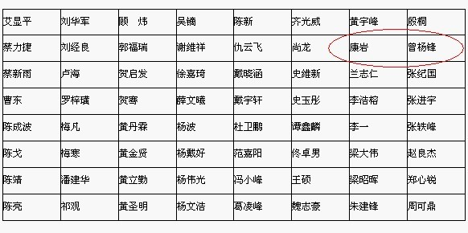

2011年全国个人赛男子组报名名单（截止9月24日收到）
#11 Re:2011年全国个人赛男子组报名名单（截止9月24日收到）作者：灯塔连珠 发表时间：2011-9-26 9:31:08
来个8强预测送威望的主题吧！！！大家都期待呢！！是吧楼下的。#12 Re:2011年全国个人赛男子组报名名单（截止9月24日收到）作者：灯塔连珠 发表时间：2011-9-26 9:33:21
“我看行，关键先看分组，然后才能猜出前八的人是谁”
“分到死亡之组的选手就难说了”
“我看分哪个组都是死亡之组”
“。。。。。。”
#13 Re:2011年全国个人赛男子组报名名单（截止9月24日收到）作者：慕容晓文 发表时间：2011-9-26 9:42:22
按照规则，若要取得好成绩，抽签很重要
1/4和4/4区是最佳区域。以64人参赛为例，每组32人（含4位种子选手），5—8号以及25—32号之间，如果保持对非种子选手获胜，那么9轮比赛碰上种子选手的概率不超过4人。按照惯例，该区棋手如能保持获胜，前两轮碰不上种子选手，第三轮碰上非种子选手的概率不超过50%。人数越多，对于该两区域选手越有利，可以越晚碰到种子选手。
前两轮获胜，是获得好成绩的有利条件。如果遇上种子棋手在前两轮有掉队，那样该两区的棋手有望在前三轮都避开种子选手
不过，鉴于种子选手只能排4位，而实际上有竞争力的棋手不下20人（每组都将超过10人），因此关键还是看自己的发挥，当然遇到对手的强弱也是一个间接因素，呵呵
［此帖子已被 慕容晓文 在 2011-9-26 9:57:13 编辑过］
#14 Re:Re:2011年全国个人赛男子组报名名单（截止9月24日收到）作者：菜包先生 发表时间：2011-9-26 10:20:08
引用：
原文由 慕容晓文 发表于 2011-9-26 9:02:51 :
史上最强的参赛名单之一，堪称03年全国赛之后的最强阵容
薛老师看上去信心不足啊。。。不是会是烟幕弹吧
上海队还是蛮强大的。。。高手基本全部到齐。。
奇了怪了，华夏竟然木有组队。。。
［此帖子已被 菜包先生 在 2011-9-26 10:23:07 编辑过］
#15 Re:2011年全国个人赛男子组报名名单（截止9月24日收到）作者：梧桐风 发表时间：2011-9-26 10:36:05
你怎么知道华夏没组队呢？那只是李一的个人分组，仅供参考的，像白痴应该是分在上海队的（他分到广东）#16 Re:2011年全国个人赛男子组报名名单（截止9月24日收到）作者：小丸.net 发表时间：2011-9-26 10:39:29
我看我的名字就像炮灰。。。。你们看呢。
我看这次吴镝是奔了冠军去的。。。。有谁跟我打赌，10W金币赌吴镝冠军。。。。
［此帖子已被 小丸.net 在 2011-9-26 10:40:50 编辑过］
#17 Re:2011年全国个人赛男子组报名名单（截止9月24日收到）作者：丹尼 发表时间：2011-9-26 10:44:00
还有竟猜么？？~~#18 Re:2011年全国个人赛男子组报名名单（截止9月24日收到）作者：奇林 发表时间：2011-9-26 10:53:04
女子组呢
［ 王志伟123 于 2011-9-26 10:56:07 时花20金币送鲜花一朵］
#19 Re:2011年全国个人赛男子组报名名单（截止9月24日收到）作者：菜农 发表时间：2011-9-26 11:00:23
不好意思，这次冠军肯定是我！只不过不是棋而已［ 冰雪笑醉 于 2011-9-26 11:57:02 时花20金币送鲜花一朵］
#20 Re:2011年全国个人赛男子组报名名单（截止9月24日收到）作者：潇洒 发表时间：2011-9-26 11:00:54
丸子，有10W金币的人不多啊……估计人家出不起那么多金币。。
#21 Re:2011年全国个人赛男子组报名名单（截止9月24日收到）作者：菜包先生 发表时间：2011-9-26 11:07:07
亮点在此：潘建华
这个名字好熟悉，好像是笑天神？
#22 Re:Re:2011年全国个人赛男子组报名名单（截止9月24日收到）作者：五子酷 发表时间：2011-9-26 11:18:10
引用：你的名字我怎么看都像是黑马。。 真想和你赌，可惜没钱。。。。
原文由 小丸.net 发表于 2011-9-26 10:39:29 :我看我的名字就像炮灰。。。。你们看呢。
我看这次吴镝是奔了冠军去的。。。。有谁跟我打赌，10W金币赌吴镝冠军。。。。
［此帖子已被 小丸.net 在 2011-9-26 10:40:50 编辑过］
#23 Re:2011年全国个人赛男子组报名名单（截止9月24日收到）作者：掌棋宣传员 发表时间：2011-9-26 11:54:15
64是个好数字,适合单败淘汰!!!#24 Re:2011年全国个人赛男子组报名名单（截止9月24日收到）作者：小丸.net 发表时间：2011-9-26 11:56:25

怎么老是把我和他放一起。。。。。阴魂不散啊。。。。
碰上他：奈伊组特。。。。
［此帖子已被 小丸.net 在 2011-9-26 12:00:55 编辑过］
#25 Re:Re:2011年全国个人赛男子组报名名单（截止9月24日收到）作者：冰雪笑醉 发表时间：2011-9-26 11:58:55
引用：哈哈，从现在开始放高利贷，到时候竞猜怕米钱鸟~~~
原文由 小丸.net 发表于 2011-9-26 10:39:29 :我看我的名字就像炮灰。。。。你们看呢。
我看这次吴镝是奔了冠军去的。。。。有谁跟我打赌，10W金币赌吴镝冠军。。。。
［此帖子已被 小丸.net 在 2011-9-26 10:40:50 编辑过］
#26 Re:Re:Re:2011年全国个人赛男子组报名名单（截止9月24日收到）作者：掌棋宣传员 发表时间：2011-9-26 11:59:35
引用：你个叫一字从来错过名字的怎能体会我们的心情~
原文由 屏蔽 发表于 2011-9-26 8:33:43 :引用：
原文由 有志青年 发表于 2011-9-26 8:28:01 :梅寒 是 梅凡？
曹东 是 曹冬？
张进宇 复出了
［此帖子已被 有志青年 在 2011-9-26 8:28:35 编辑过］
梅寒不是梅凡
我想知道为什么曹冬每次比赛名字都是错的，故意的？芦海都没错过这么多，当然这次也错了。
［此帖子已被 屏蔽 在 2011-9-26 8:34:03 编辑过］

#27 Re:Re:Re:2011年全国个人赛男子组报名名单（截止9月24日收到）作者：小丸.net 发表时间：2011-9-26 12:02:58
引用：
原文由 冰雪笑醉 发表于 2011-9-26 11:58:55 :引用：哈哈，从现在开始放高利贷，到时候竞猜怕米钱鸟~~~
原文由 小丸.net 发表于 2011-9-26 10:39:29 :我看我的名字就像炮灰。。。。你们看呢。
我看这次吴镝是奔了冠军去的。。。。有谁跟我打赌，10W金币赌吴镝冠军。。。。
［此帖子已被 小丸.net 在 2011-9-26 10:40:50 编辑过］
我集了15W的风投(风险投资)。。。准备全国赛上用。。。。
#28 Re:Re:2011年全国个人赛男子组报名名单（截止9月24日收到）作者：战神巴蒂 发表时间：2011-9-26 12:04:53
引用：
原文由 小丸.net 发表于 2011-9-26 10:39:29 :我看我的名字就像炮灰。。。。你们看呢。
我看这次吴镝是奔了冠军去的。。。。有谁跟我打赌，10W金币赌吴镝冠军。。。。
［此帖子已被 小丸.net 在 2011-9-26 10:40:50 编辑过］
哥想赌10W金币吴镝拿不到冠军，不过好像比较穷，没那么多钱
#29 Re:2011年全国个人赛男子组报名名单（截止9月24日收到）作者：冰雪笑醉 发表时间：2011-9-26 12:05:56

晒出来看看~`
#30 Re:2011年全国个人赛男子组报名名单（截止9月24日收到）作者：潇洒 发表时间：2011-9-26 12:08:17
我也来放高利贷。。利率也是10%
有意者论坛短信M我。。
#31 Re:Re:Re:2011年全国个人赛男子组报名名单（截止9月24日收到）作者：华夏使者 发表时间：2011-9-26 12:12:12
引用：
原文由 菜包先生 发表于 2011-9-26 10:20:08 :引用：
原文由 慕容晓文 发表于 2011-9-26 9:02:51 :
史上最强的参赛名单之一，堪称03年全国赛之后的最强阵容薛老师看上去信心不足啊。。。不是会是烟幕弹吧
上海队还是蛮强大的。。。高手基本全部到齐。。
奇了怪了，华夏竟然木有组队。。。
［此帖子已被 菜包先生 在 2011-9-26 10:23:07 编辑过］
嗯，我们也给几位棋手报了名，只不过是个人赛，多些棋手参与就好，其他没这么重要。
［ 冰雪笑醉 于 2011-9-26 12:16:56 时花20金币送鲜花一朵］
［ 吉小鼠 于 2011-9-26 22:58:06 时花20金币送鲜花一朵］
［ 吉小鼠 于 2011-9-26 22:58:22 时花20金币送鲜花一朵］
［ 吉小鼠 于 2011-9-26 22:58:30 时花20金币送鲜花一朵］
#32 Re:2011年全国个人赛男子组报名名单（截止9月24日收到）作者：冰雪笑醉 发表时间：2011-9-26 12:13:26
那好吧，跟楼上的，我也利率10%，，#33 Re:Re:2011年全国个人赛男子组报名名单（截止9月24日收到）作者：奇林 发表时间：2011-9-26 12:14:53
引用：你楼上不是放贷的
原文由 冰雪笑醉 发表于 2011-9-26 12:13:26 :
#34 Re:Re:Re:2011年全国个人赛男子组报名名单（截止9月24日收到）作者：冰雪笑醉 发表时间：2011-9-26 12:16:20
引用：我回复的时候，楼上是放高利贷的。。老老中途跑出来打劫了呀
原文由 奇林 发表于 2011-9-26 12:14:53 :引用：你楼上不是放贷的
原文由 冰雪笑醉 发表于 2011-9-26 12:13:26 :
#35 Re:2011年全国个人赛男子组报名名单（截止9月24日收到）作者：华夏使者 发表时间：2011-9-26 12:20:08
我准备等竟猜出来了再借钱，现在已经破产了，还欠外债几万#36 Re:2011年全国个人赛男子组报名名单（截止9月24日收到）作者：奇林 发表时间：2011-9-26 12:24:18
 我指望这次竞猜能把威望弄到20
我指望这次竞猜能把威望弄到20#37 Re:2011年全国个人赛男子组报名名单（截止9月24日收到）作者：炫飞冰弦 发表时间：2011-9-26 12:26:09
大家都好有钱哇。。。 各种赌
各种赌#38 Re:2011年全国个人赛男子组报名名单（截止9月24日收到）作者：华夏使者 发表时间：2011-9-26 12:26:14
竟猜和威望有什么联系吗？#39 Re:Re:Re:2011年全国个人赛男子组报名名单（截止9月24日收到）作者：慕容晓文 发表时间：2011-9-26 12:30:47
引用：
原文由 菜包先生 发表于 2011-9-26 10:20:08 :引用：
原文由 慕容晓文 发表于 2011-9-26 9:02:51 :
史上最强的参赛名单之一，堪称03年全国赛之后的最强阵容薛老师看上去信心不足啊。。。不是会是烟幕弹吧
上海队还是蛮强大的。。。高手基本全部到齐。。
奇了怪了，华夏竟然木有组队。。。
［此帖子已被 菜包先生 在 2011-9-26 10:23:07 编辑过］
那是自然的，我现在属于二线啦……呵呵
中间隔了几年都没拆过棋……马上快成棋盲了
去年还想着“明年多下棋”，转眼一年过去生活依旧……可惜啊，五子棋不能当饭吃~~~~呵呵
#40 Re:2011年全国个人赛男子组报名名单（截止9月24日收到）作者：小元 发表时间：2011-9-26 16:38:49
这次比赛貌似种子和非种子看起来没多大实力差距，大家水平都比较接近#41 Re:2011年全国个人赛男子组报名名单（截止9月24日收到）作者：蓝天蓝 发表时间：2011-9-26 18:33:52
祝大家比赛取得好成绩#42 Re:2011年全国个人赛男子组报名名单（截止9月24日收到）作者：dyccj 发表时间：2011-9-26 18:55:46
等竞猜，赌金币。#43 Re:2011年全国个人赛男子组报名名单（截止9月24日收到）作者：西北狼梦魂 发表时间：2011-9-26 19:15:36
祝比赛所有选手都取得理想的成绩！#44 Re:2011年全国个人赛男子组报名名单（截止9月24日收到）作者：西北狼梦魂 发表时间：2011-9-26 19:20:19
毒狼加油！ 雅匪加油！ 鬼灵加油！
#45 Re:2011年全国个人赛男子组报名名单（截止9月24日收到）作者：八路 发表时间：2011-9-26 19:21:17
这次比赛进前八名的棋手 爆冷的可能性很大 提醒大家注意 《竞猜有风险！下注需谨慎！》
《竞猜有风险！下注需谨慎！》
#46 Re:2011年全国个人赛男子组报名名单（截止9月24日收到）作者：游戏人间 发表时间：2011-9-26 21:19:13
这次比赛没冷门。。谁赢谁都正常。。
#47 Re:2011年全国个人赛男子组报名名单（截止9月24日收到）作者：奇林 发表时间：2011-9-26 21:51:37
多设几个得威望的机会吧......#48 Re:2011年全国个人赛男子组报名名单（截止9月24日收到）作者：一期一会 发表时间：2011-9-26 21:52:16
哇塞，今年男子组比去年还要强悍！~~~#49 Re:Re:2011年全国个人赛男子组报名名单（截止9月24日收到）作者：奇林 发表时间：2011-9-26 21:56:31
引用：还好今年不让你跨组
原文由 一期一会 发表于 2011-9-26 21:52:16 :
哇塞，今年男子组比去年还要强悍！~~~
#50 Re:2011年全国个人赛男子组报名名单（截止9月24日收到）作者：tears 发表时间：2011-9-26 22:03:08
高手林立,灰常刺激~#51 Re:Re:Re:2011年全国个人赛男子组报名名单（截止9月24日收到）作者：一期一会 发表时间：2011-9-26 22:32:05
引用：
原文由 奇林 发表于 2011-9-26 21:56:31 :还好今年不让你跨组引用：
原文由 一期一会 发表于 2011-9-26 21:52:16 :
哇塞，今年男子组比去年还要强悍！~~~那好呀，幸免于难~~~祝牛牛继续牛下去！！！
#52 Re:Re:2011年全国个人赛男子组报名名单（截止9月24日收到）作者：一期一会 发表时间：2011-9-26 22:33:03
引用：
原文由 tears 发表于 2011-9-26 22:03:08 :
高手林立,灰常刺激~
偶像加油↖(^ω^)↗
#53 Re:2011年全国个人赛男子组报名名单（截止9月24日收到）作者：吉小鼠 发表时间：2011-9-26 22:59:44
各种加油~~~~~［ 奇林 于 2011-9-26 23:00:28 时花20金币送鲜花一朵］
#54 Re:2011年全国个人赛男子组报名名单（截止9月24日收到）作者：珍惜你和我 发表时间：2011-9-26 23:40:43
气势磅礴，光看名字就感受到了震撼#55 Re:2011年全国个人赛男子组报名名单（截止9月24日收到）作者：极地剑客 发表时间：2011-9-27 5:47:41
搞笑的路过，哇咔咔
#56 Re:2011年全国个人赛男子组报名名单（截止9月24日收到）作者：五子酷 发表时间：2011-9-27 8:35:23
啥时候想参加全国赛必须各省进行选拔前几名过来比，这样就真是高水平对决了。#57 Re:Re:2011年全国个人赛男子组报名名单（截止9月24日收到）作者：慕容晓文 发表时间：2011-9-27 9:02:04
引用：
原文由 五子酷 发表于 2011-9-27 8:35:23 :
啥时候想参加全国赛必须各省进行选拔前几名过来比，这样就真是高水平对决了。
呵呵，是啊~~~~
猴年马月呢
#58 Re:2011年全国个人赛男子组报名名单（截止9月24日收到）作者：孤独的龙 发表时间：2011-9-27 16:52:20
怎么有我的名字，和我同名同姓吗？嘿嘿#59 Re:2011年全国个人赛男子组报名名单（截止9月24日收到）作者：闫荣辉 发表时间：2011-9-27 20:03:28
一年不说几次话的看大家赌钱，压力很大，借此机会祝各位取得好成绩，顺便赚几个金币。
#60 Re:2011年全国个人赛男子组报名名单（截止9月24日收到）作者：棋情 发表时间：2011-9-28 2:18:51
 预祝菜农勇夺"冠军"
预祝菜农勇夺"冠军"#61 Re:2011年全国个人赛男子组报名名单（截止9月24日收到）作者：杀手 发表时间：2011-9-29 17:42:40
木玲珑陈戈？期待首秀！#62 Re:2011年全国个人赛男子组报名名单（截止9月24日收到）作者：润土 发表时间：2011-9-29 19:33:39
楼上滴，他是老演员了。首秀貌似在第2界全国赛。
#63 Re:2011年全国个人赛男子组报名名单（截止9月24日收到）作者：辽宁棋子 发表时间：2011-9-29 22:50:25
恩。小新人去了。加油啊~~！
#64 Re:Re:2011年全国个人赛男子组报名名单（截止9月24日收到）作者：慕容晓文 发表时间：2011-9-29 22:58:35
引用：
原文由 游戏人间 发表于 2011-9-26 21:19:13 :这次比赛没冷门。。谁赢谁都正常。。
hehe
是啊,就看人品了
#65 Re:Re:2011年全国个人赛男子组报名名单（截止9月24日收到）作者：杀手 发表时间：2011-9-30 0:56:07
引用：
原文由 润土 发表于 2011-9-29 19:33:39 :楼上滴，他是老演员了。首秀貌似在第2界全国赛。
忘加了一句，复出后的首秀
#66 Re:2011年全国个人赛男子组报名名单（截止9月24日收到）作者：没事摆石子玩 发表时间：2011-9-30 0:58:55
从来也没隐退过啊 这两年有出来比过的［此帖子已被 没事摆石子玩 在 2011-9-30 0:59:39 编辑过］
#67 Re:2011年全国个人赛男子组报名名单（截止9月24日收到）作者：润本 发表时间：2011-9-30 9:27:03
期待重庆最强三剑客：李浩榕，杨波，杨文浩这次比赛能有上佳表现。#68 Re:Re:2011年全国个人赛男子组报名名单（截止9月24日收到）作者：五子酷 发表时间：2011-9-30 10:04:23
引用：杨波不是西安的吗？
原文由 润本 发表于 2011-9-30 9:27:03 :
期待重庆最强三剑客：李浩榕，杨波，杨文浩这次比赛能有上佳表现。
#69 Re:2011年全国个人赛男子组报名名单（截止9月24日收到）作者：天真無邪 发表时间：2011-9-30 19:50:54
爆冷一点也不奇怪 不过依据赛制來看 还是看好像艾显平黄立勤这些快棋高手取得好成绩....
［ 掌棋宣传员 于 2011-9-30 20:30:38 时花20金币送鲜花一朵］
［ 掌棋宣传员 于 2011-9-30 20:30:40 时花20金币送鲜花一朵］
［ 掌棋宣传员 于 2011-9-30 20:30:41 时花20金币送鲜花一朵］
#70 Re:2011年全国个人赛男子组报名名单（截止9月24日收到）作者：掌棋宣传员 发表时间：2011-9-30 20:31:10

#71 Re:Re:2011年全国个人赛男子组报名名单（截止9月24日收到）作者：蓝天蓝 发表时间：2011-9-30 22:17:15
引用：宝宝很可爱，发几张照片吧
原文由 掌棋宣传员 发表于 2011-9-30 20:31:10 :
#72 Re:2011年全国个人赛男子组报名名单（截止9月24日收到）作者：海湾浪琴 发表时间：2011-10-2 11:20:56
好不容易赢了一盘